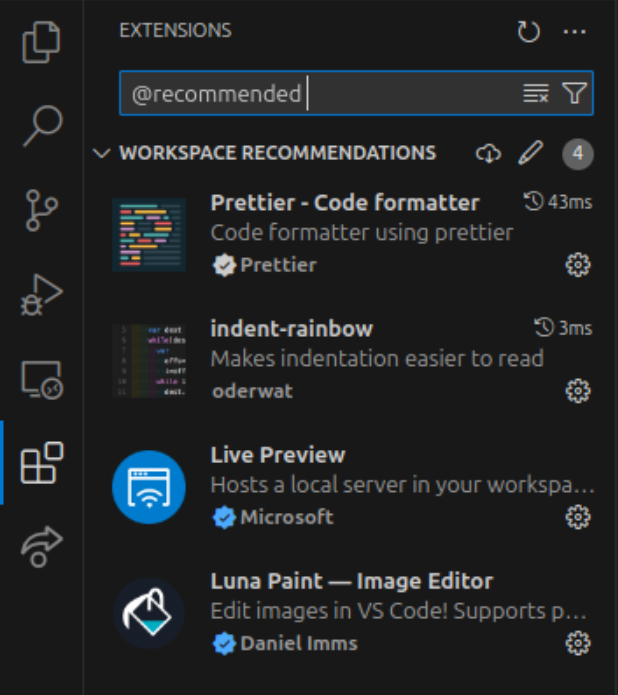

#
Visual Studio Code
Visual Studio Code, ook wel VS Code genoemd, is een gratis beschikbare tekst editor die zeer geschikt is voor programmeren. Er zijn veel uitbreidingen voor beschikbaar die het werken met code eenvoudiger maken.
Voor een aantal projecten die bij de CoderDojo verzorgd worden maken we gebruik van deze editor. Deze handleiding legt je uit hoe je de editor kunt installeren en een project kunt voorbereiden om direct aan de slag te kunnen.
#
VS Code Installeren
- Download een installatiebestand voor het besturingssyteem van je computer voor Visual Studio Code van de website. In veel gevallen zal je besturingssyteem Windows zijn, maar versies voor Linux and Mac zijn ook beschikbaar.
- Nadat je het installatiebestand hebt gedownload kun je het programma installeren.
- Zodra het programma geïnstalleerd is kun je het vinden in het menu van waaruit je programma's opstart door de zoeken naar Code.
#
Een map voor een project voorbereiden
We een aantal bestanden voorbereid die het eenvoudig maken om VS Code zo te configureren dat je er optimaal mee aan CoderDojo projecten te werken, bijvoorbeeld door een aantal handige uitbreidingen te installeren. Op die manier kun je zo snel mogelijk aan het werk.
- Maak een map aan op de harde schijf van je computer waar je het project wilt opslaan.
Download het zip-bestand hieronder en pak het uit naar de map die je zojuist gemaakt hebt.
Er zou nu een
.vscodemap in de project map moeten staan.- Start VS Code en open de project map door op File en dan Open Folder... te klikken (of door Ctrl/Cmd + k, Ctrl/Cmd + o in te toetsen).
Installeer de aanbevolen extensies door naar het extensies menu te navigeren (het actieve item in de volgende schermafbeelding).
Dit kan door er op te klikken of door op je toetsenbord de toetsen Ctrl/Cmd + Shift + x tegelijkertijd in te drukken. Type in het zoekveld
@recommendeden zorg ervoor dat alle extensies geïnstalleerd zijn.In sommige gevallen kan het zijn dat je VS Code opnieuw moet opstarten.

info
Als je geluk hebt, vraagt VS Code bij het openen van de map automatisch of je de aanbevolen extensies wilt installeren. Klik in dat geval op Ja.
De map is nu voorbereid. Indien je naar deze pagina doorverwezen bent vanuit een project, kun je nu teruggaan naar het project. Mocht je meer willen weten over hoe je bepaalde dingen kunt doen in VS Code, lees dan verder. Je kunt ook het menu aan de rechterkant gebruiken om direct naar een relevant onderwerp te navigeren.
#
Nieuwe mappen en bestanden maken
Het maken van nieuwe mappen of bestanden in een project map is zo gedaan vanuit VS Code. Dit gebeurt vanuit het Explorer paneel. Dit is het eerste paneel dat toegankelijk is vanuit de primaire toolbar. Het kan geopened worden door er op te klikken, of door de toetsen Ctrl/Cmd + Shift + e tegelijkertijd in te drukken.
Na het openen van het paneel verschijnt de huidige inhoud van de geopende map. Wanneer je met je muis over de inhoud van de map heen beweegt verschijnen er 4 knoppen. De twee linker knoppen maken respectievelijk een nieuw bestand en een nieuwe map in de project map. Wanneer je een bestand of map in een andere map wilt aanmaken, dan dien je die eerst te selecteren.